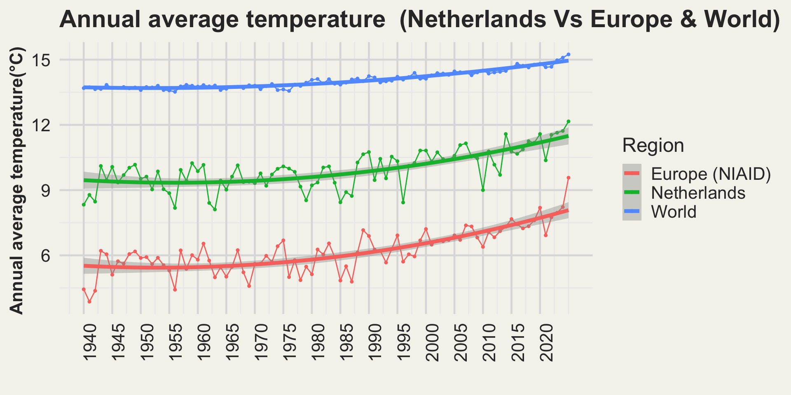
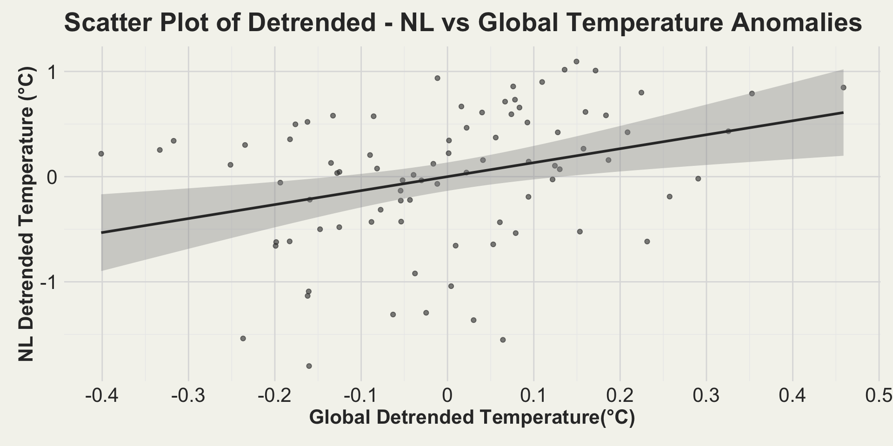
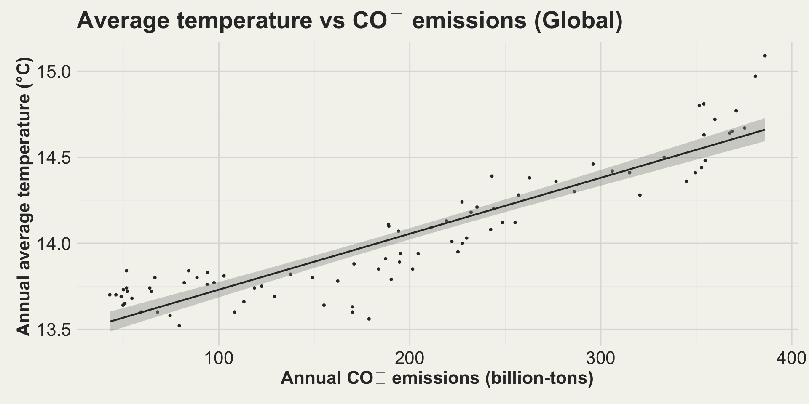
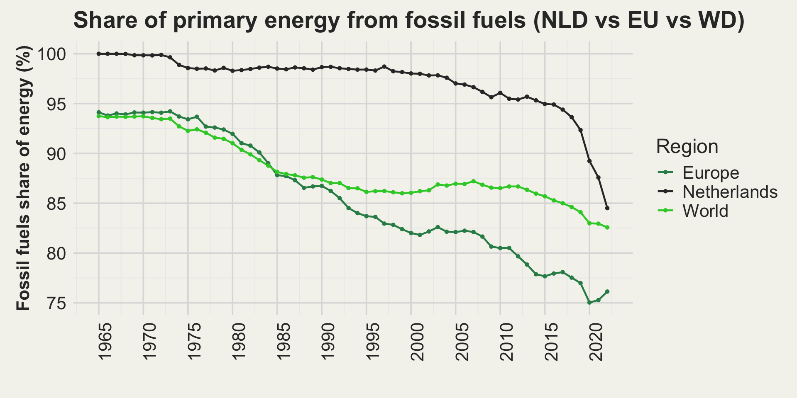
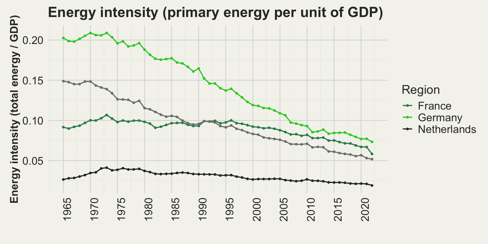
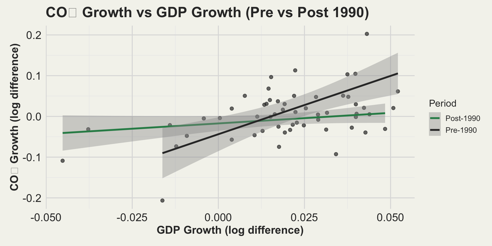
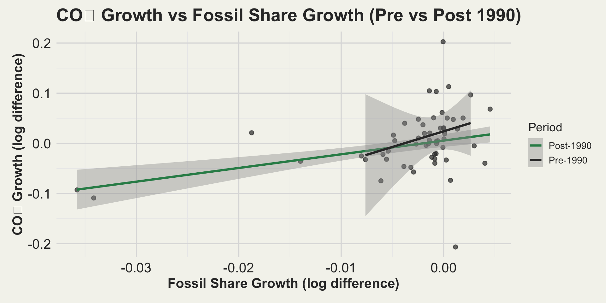
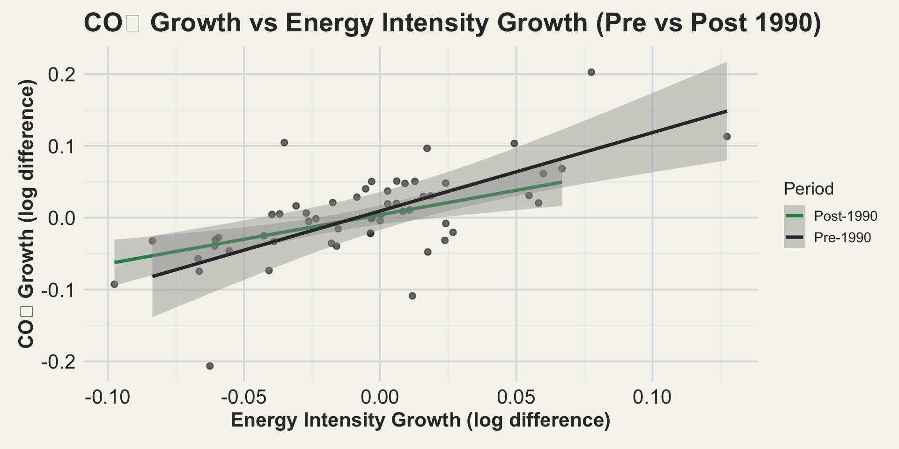

FDS Group Presentation
2026-05-15
Linking Carbon Emissions to Climate Change
Investigating the CO₂ Drivers and
Temperature Effects in the Netherlands
Table of Contents
01
Introduction
Setting the scene!
04
Methodology
From data to insight!
02
Statement
What we set out to know?
05
Analysis
Examining signals up close!
03
Hypotheses
Expectations before evidence!
06
Conclusion
Final takeaway insights!
Introduction
What is climate change?
Refers to long-term shifts in temperature and weather patterns.
Who is responsible?

What is carbon footprint?
Total GHG caused by a person, organization, product, or activity, expressed as CO₂ equivalent.
Is excess greenhouse gas (GHG) emissions, especially carbon dioxide (CO₂) the central driver for climate change?
02 Research Questions
📝 Statements
Statement 1.
How strongly are regional, for ex. in Netherlands, annual temperature increase is correlated with annual CO₂ emissions, and how has this relationship changed over the last few years?
Statement 2.
What are the largest contributors to recent changes in CO₂ emissions ~ energy efficiency, GDP growth, or energy mix for Netherlands?
03 Hypotheses
💡 Hypotheses for statement 1. (RQ1)
Q1.2: NL Temperature Trend
Hypothesis: The linear trend (slope) of Netherlands annual mean temperature over time is not zero.
Q1.2: NL-Global Co-variance
Hypothesis: There is linear association between detrended NL temperature anomalies and detrended global temperature anomalies.
Q1.3: Global CO₂/Temperature Association
Hypothesis: Changes in atmospheric CO₂ are associated with changes in global mean surface temperature.
03 Hypotheses
💡 Hypotheses for statement 2. (RQ2)
Q2.1: NL~CO₂ drivers Multi-variant regression analysis
Hypothesis: GDP growth is the strongest and most consistent driver of annual CO₂ emission changes in the Netherlands, even when controlling for fossil-fuel share and energy-intensity changes.
Regression Model
Δln(CO₂t) = β0 + β1 Δln(GDPt) + β2 Δln(FossilSharet) + β3 Δln(EnergyIntensityt) + εt
Where:
- Δln(CO₂t) = annual growth rate of CO₂ emissions
- Δln(GDPt) = annual GDP growth
- Δln(FossilSharet) = percent change in fossil-fuel share
- Δln(EnergyIntensityt) = percent change in energy intensity
- εt = error term
04 Methodolgy
| DATA SOURCES | \(\longrightarrow\) | DATA PROCESSING | \(\longrightarrow\) | STATISTICAL MODELS | \(\longrightarrow\) | PERIOD COMPARISON | \(\longrightarrow\) | INSIGHTS | |
|---|---|---|---|---|---|---|---|---|---|
| Action: Temps(3), CO₂(4),GDP(5)(6), Energy(7)(8)(9)(10) | Method: Cleaning, Transforming, detrending, Growth rates (Δln) | Method: Trends, covariance, Regression analyses, Multi-variant regression |
Method: Pre vs Post 1990 Shifts in drivers |
Drivers, impacts, Final storyline |
04 Analysis
Q1.1: Does Netherlands annual mean temperature over time follow a linear trend?
Statistical Model Fit Summary
| Region | \(\mathbf{R}^2\) | \(\mathbf{Pr(>|t|)}\) |
|---|---|---|
| World | 0.9217 | 2.70e-16 |
| Europe | 0.6349 | 0.000264 |
| Netherlands | 0.4941 | 0.00131 |
-Netherlands temperatures show a significant linear warming trend since the 1970s, tracking and slightly exceeding European/global rates.
- Moderate R² values reflect high inter annual variability from internal climate dynamics (11).
04 Analysis
Q1.2: Detrended Covariance ~ NL and Global Temp.

Statistical Model Fit Summary
| Region | \(\mathbf{\rho}\) | \(\mathbf{Pr(>|t|)}\) |
|---|---|---|
| NLD/GBL | 0.3242 | 0.00247 |
-Detrended Dutch (NL) temperatures show a modest but significant positive co-variation with global temperature anomalies (ρ ≈ 0.32).
-The relationship is statistically significant (p ≈ 0.002), indicating synchronized variability beyond long-term trends(12).
04 Analysis
Q1.3: Global CO₂ Concentration vs Temp. Relationship

Statistical Model Fit Summary
| Region | \(\mathbf{R}^2\) | \(\mathbf{Pr(>|t|)}\) |
|---|---|---|
| World | 0.8401 | 2.2e-16 |
-Global CO₂ levels show a very strong statistical association with temperature increases (R² = 0.84), consistent with the established physical link.
-The results clearly indicate that increasing CO₂ emissions are the primary driver of warming globally and in the Netherlands.
04 Analysis
Key CO₂ drivers ~ fossil fuel share and energy efficency?
Percentage of total primary energy consumption supplied by coal, oil, and gas.

Energy Intensity = (Total Energy / GDP),
where, total energy = sum of primary energy sources

-Fossil fuel shares fall - decline becomes much steeper after about 1990, especially for the Netherlands relative to Europe and the world.
-Energy intensity drops - improves much faster after about 1990, with all becoming more efficiency driven.
-So, we decided to split our regression analysis into two periods to study these effects(pre and post 1990)
04 Analysis
Q2.1 NL~CO₂ drivers - GDP growth

Statistical Model Fit Summary
| Region | \(\mathbf{\beta}\) | \(\mathbf{Pr(>|t|)}\) |
|---|---|---|
| Pre-1990 | 2.14119 | 0.00778* |
| Post-1990 | 0.966597 | 4.3e-05* |
-strong, statistically significant driver of CO₂ growth in both periods.
-The effect size drops after 1990, suggesting economies became somewhat less carbon-intensive even as growth continued to raise emissions.
04 Analysis
Q2.1 NL~CO₂ drivers - Fossil Fuel Share growth

Statistical Model Fit Summary
| Region | \(\mathbf{\beta}\) | \(\mathbf{Pr(>|t|)}\) |
|---|---|---|
| Pre-1990 | 4.03462 | 0.51390 |
| Post-1990 | 1.399934 | 0.00353* |
-CO₂ growth shows a weak, non-significant link to fossil-fuel share changes before 1990, but a strong, significant positive relationship emerges after 1990.
-This suggests fossil-fuel dependency became a much clearer driver of emissions growth in the post-1990 period.
04 Analysis
Q2.1 NL~CO₂ drivers - Energy intensity growth

Statistical Model Fit Summary
| Region | \(\mathbf{\beta}\) | \(\mathbf{Pr(>|t|)}\) |
|---|---|---|
| Pre-1990 | 0.67796 | 0.02726 |
| Post-1990 | 0.861386 | 6.2e-07* |
-Strong and significant driver of CO₂ growth both before and after 1990.
-The relationship intensifies post-1990, indicating that efficiency improvements matter even more for emissions outcomes in the modern period.
Conclusion– Key Takeaways
RQ1 findings:
- Netherlands warming — clear rise.
- Netherlands ↔︎ Global covariance: Dutch year-to-year temperature swings track global anomalies.
- CO₂ is the main driver — global carbon rise explains most warming.
RQ2 findings:
- GDP growth raises emissions — strong pre-1990, still significant after.
- Energy efficiency reduces emissions — impactful before 1990, even stronger after.
- Fossil-fuel share matters more post-1990 — cleaner mix = clearer emission cuts.
“The world heats up, Netherlands follows - and our future now depends on smarter energy and a cleaner mix”
Thank you!
Bibliography reference
- Visual Capitalist. A global breakdown of greenhouse gas emissions by sector [Internet]. Vancouver (BC): Visual Capitalist; 2023 [cited 2025 Dec 11]. Available from: https://www.visualcapitalist.com/a-global-breakdown-of-greenhouse-gas-emissions-by-sector/
- Our World in Data. Average monthly surface temperature [Internet]. Our World in Data; 2025 [cited 2025 Dec 11]. Available from: https://ourworldindata.org/grapher/average-monthly-surface-temperature?tab=line&time=earliest..2025-10-15&country=NLDEurope+(NIAID)OWID_WRL[1]
- Our World in Data. Annual CO₂ emissions [Internet]. Our World in Data; 2025 [cited 2025 Dec 11]. Available from: https://ourworldindata.org/grapher/annual-co2-emissions-per-country?time=1960..latest&country=NLDOWID_WRLOWID_EUR.
- Our World in Data. GDP per capita - Maddison Project Database [Internet]. Our World in Data; 2024 [cited 2025 Dec 11]. Available from: https://ourworldindata.org/grapher/gdp-per-capita-maddison-project-database?tab=line&time=1960..2022&country=~NLD.
- Our World in Data. GDP per capita - Maddison Project Database [Internet]. Our World in Data; 2024 [cited 2025 Dec 11]. Available from: https://ourworldindata.org/grapher/gdp-per-capita-maddison-project-database?tab=line&time=1960..2022&country=GBRFRADEU&globe=1.
- Our World in Data. Share of primary energy consumption from fossil fuels – Using the substitution method [Internet]. Our World in Data; 2025 [cited 2025 Dec 11]. Available from: https://ourworldindata.org/grapher/fossil-fuels-share-energy?tab=line&country=NLDOWID_EUROWID_WRL.
- Our World in Data. Primary energy consumption by source [Internet]. Our World in Data; 2025 [cited 2025 Dec 11]. Available from: https://ourworldindata.org/grapher/primary-sub-energy-source?country=~NLD.
- Our World in Data. Primary energy consumption by source [Internet]. Our World in Data; 2025 [cited 2025 Dec 11]. Available from: https://ourworldindata.org/grapher/primary-sub-energy-source?country=~FRA.
- Our World in Data. Primary energy consumption by source [Internet]. Our World in Data; 2025 [cited 2025 Dec 11]. Available from: https://ourworldindata.org/grapher/primary-sub-energy-source?country=~GBR.
- Our World in Data. Primary energy consumption by source [Internet]. Our World in Data; 2025 [cited 2025 Dec 11]. Available from: https://ourworldindata.org/grapher/primary-sub-energy-source?country=~DEU.
- von Storch H, Zwiers FW. Statistical Analysis in Climate Research. Cambridge: Cambridge University Press; 1999.
- Shepherd TG. Atmospheric circulation as a source of uncertainty in climate change projections. Philos Trans R Soc A Math Phys Eng Sci. 2016;374(2080):20140426. doi:10.1098/rsta.2014.0426.
Group_36_FDS_Group_Presentation